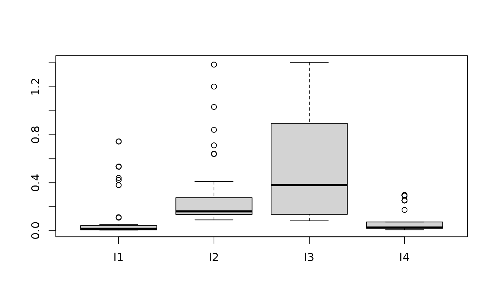
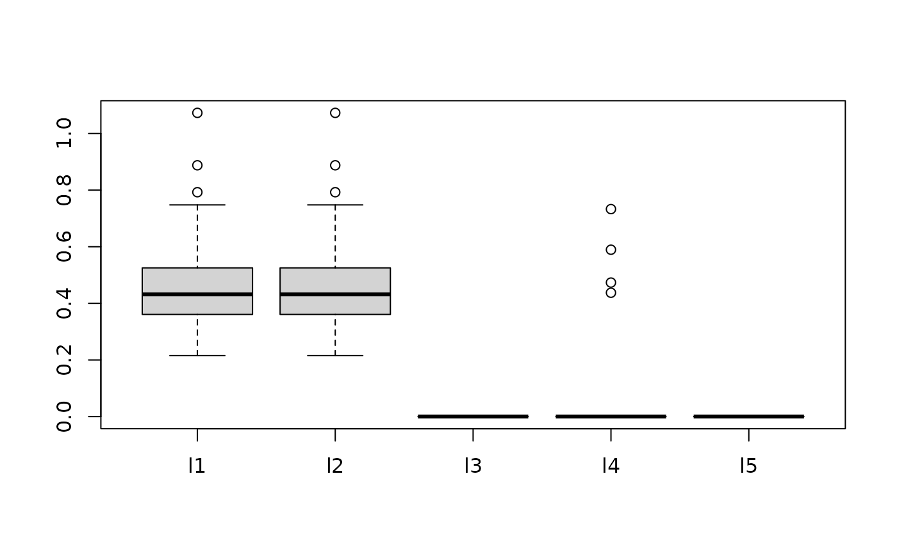

BARK is a Bayesian sum-of-kernels model.
For numeric response \(y\), we have
\(y = f(x) + \epsilon\),
where \(\epsilon \sim N(0,\sigma^2)\).
For a binary response \(y\), \(P(Y=1 | x) = F(f(x))\),
where \(F\)
denotes the standard normal cdf (probit link).
In both cases, \(f\) is the sum of many Gaussian kernel functions.
The goal is to have very flexible inference for the unknown
function \(f\).
BARK uses an approximation to a Cauchy process as the prior distribution
for the unknown function \(f\).
Feature selection can be achieved through the inference on the scale parameters in the Gaussian kernels. BARK accepts four different types of prior distributions, e, d, enabling either soft shrinkage or se, sd, enabling hard shrinkage for the scale parameters.
Usage
bark(
formula,
data,
subset,
na.action = na.omit,
testdata = NULL,
selection = TRUE,
common_lambdas = TRUE,
classification = FALSE,
keepevery = 100,
nburn = 100,
nkeep = 100,
printevery = 1000,
keeptrain = FALSE,
verbose = FALSE,
fixed = list(),
tune = list(lstep = 0.5, frequL = 0.2, dpow = 1, upow = 0, varphistep = 0.5, phistep =
1),
theta = list()
)Arguments
- formula
model formula for the model with all predictors, Y ~ X. The X variables will be centered and scaled as part of model fitting.
- data
a data frame. Factors will be converted to numerical vectors based on the using `model.matrix`.
- subset
an optional vector specifying a subset of observations to be used in the fitting process.
- na.action
a function which indicates what should happen when the data contain NAs. The default is "na.omit".
- testdata
Dataframe with test data for out of sample prediction.
Should have same structure as data.- selection
Logical variable indicating whether variable dependent kernel parameters \(\lambda\) may be set to zero in the MCMC; default is TRUE.
- common_lambdas
Logical variable indicating whether kernel parameters \(\lambda\) should be predictor specific or common across predictors; default is TRUE. Note if common_lambdas = TRUE and selection = TRUE this applies just to the non-zero \(lambda_j\).
- classification
TRUE/FALSE logical variable, indicating a classification or regression problem.
- keepevery
Every keepevery draw is kept to be returned to the user
- nburn
Number of MCMC iterations (nburn*keepevery) to be treated as burn in.
- nkeep
Number of MCMC iterations kept for the posterior inference.
nkeep*keepevery iterations after the burn in.- printevery
As the MCMC runs, a message is printed every printevery draws.
- keeptrain
Logical, whether to keep results for training samples.
- verbose
Logical, whether to print out messages
- fixed
A list of fixed hyperparameters, using the default values if not specified.
alpha = 1: stable index, must be 1 currently.
eps = 0.5: approximation parameter.
gam = 5: intensity parameter.
la = 1: first argument of the gamma prior on kernel scales.
lb = 2: second argument of the gamma prior on kernel scales.
pbetaa = 1: first argument of the beta prior on plambda.
pbetab = 1: second argument of the beta prior on plambda.
n: number of training samples, automatically generates.
p: number of explanatory variables, automatically generates.
meanJ: the expected number of kernels, automatically generates.- tune
A list of tuning parameters, not expected to change.
lstep: the stepsize of the lognormal random walk on lambda.
frequL: the frequency to update L.
dpow: the power on the death step.
upow: the power on the update step.
varphistep: the stepsize of the lognormal random walk on varphi.
phistep: the stepsize of the lognormal random walk on phi.- theta
A list of the starting values for the parameter theta, use defaults if nothing is given.
Value
bark returns an object of class `bark` with a list, including:
- call
the matched call
- fixed
Fixed hyperparameters
- tune
Tuning parameters used
- theta.last
The last set of parameters from the posterior draw
- theta.nvec
A matrix with nrow(x.train)\(+1\) rows and (nkeep) columns, recording the number of kernels at each training sample
- theta.varphi
A matrix with nrow(x.train) \(+1\) rows and (nkeep) columns, recording the precision in the normal gamma prior distribution for the regression coefficients
- theta.beta
A matrix with nrow(x.train)\(+1\) rows and (nkeep) columns, recording the regression coefficients
- theta.lambda
A matrix with ncol(x.train) rows and (nkeep) columns, recording the kernel scale parameters
- thea.phi
The vector of length nkeep, recording the precision in regression Gaussian noise (1 for the classification case)
- yhat.train
A matrix with nrow(x.train) rows and (nkeep) columns. Each column corresponds to a draw \(f^*\) from the posterior of \(f\) and each row corresponds to a row of x.train. The \((i,j)\) value is \(f^*(x)\) for the \(j^{th}\) kept draw of \(f\) and the \(i^{th}\) row of x.train.
For classification problems, this is the value of the expectation for the underlying normal random variable.
Burn-in is dropped- yhat.test
Same as yhat.train but now the x's are the rows of the test data; NULL if testdata are not provided
- yhat.train.mean
train data fits = row mean of yhat.train
- yhat.test.mean
test data fits = row mean of yhat.test
Details
BARK is implemented using a Bayesian MCMC method. At each MCMC interaction, we produce a draw from the joint posterior distribution, i.e. a full configuration of regression coefficients, kernel locations and kernel parameters.
Thus, unlike a lot of other modelling methods in R, we do not produce a single model object from which fits and summaries may be extracted. The output consists of values \(f^*(x)\) (and \(\sigma^*\) in the numeric case) where * denotes a particular draw. The \(x\) is either a row from the training data (x.train)
References
Ouyang, Zhi (2008) Bayesian Additive Regression Kernels. Duke University. PhD dissertation, page 58.
See also
Other bark functions:
bark-package,
bark-package-deprecated,
sim_Friedman1(),
sim_Friedman2(),
sim_Friedman3(),
sim_circle()
Examples
##Simulated regression example
# Friedman 2 data set, 200 noisy training, 1000 noise free testing
# Out of sample MSE in SVM (default RBF): 6500 (sd. 1600)
# Out of sample MSE in BART (default): 5300 (sd. 1000)
traindata <- data.frame(sim_Friedman2(200, sd=125))
testdata <- data.frame(sim_Friedman2(1000, sd=0))
# example with a very small number of iterations to illustrate usage
fit.bark.d <- bark(y ~ ., data=traindata, testdata= testdata,
nburn=10, nkeep=10, keepevery=10,
classification=FALSE,
common_lambdas = FALSE,
selection = FALSE)
boxplot(data.frame(fit.bark.d$theta.lambda))

mean((fit.bark.d$yhat.test.mean-testdata$y)^2)
#> [1] 7647.751
# \donttest{
##Simulate classification example
# Circle 5 with 2 signals and three noisy dimensions
# Out of sample erorr rate in SVM (default RBF): 0.110 (sd. 0.02)
# Out of sample error rate in BART (default): 0.065 (sd. 0.02)
traindata <- sim_circle(200, dim=5)
testdata <- sim_circle(1000, dim=5)
fit.bark.se <- bark(y ~ .,
data=data.frame(traindata),
testdata= data.frame(testdata),
classification=TRUE,
nburn=100, nkeep=200, )
boxplot(as.data.frame(fit.bark.se$theta.lambda))

mean((fit.bark.se$yhat.test.mean>0)!=testdata$y)
#> [1] 0.019
# }